项目课程(5) 天然瓶玉雕设计与制作
所谓天然瓶就是在瓶子造型器物的一侧或周围雕饰植物等，如树木、花鸟、疏果等。天然瓶的造型吸收了瓷瓶的样式，呈现出秀丽玲珑、于静欲动之感。这类产品还有壶、盂等容器的形式。天然瓶在造型上由于植物等陪衬、组合，出现了玲珑剔透的效果，在空间造型关系上更为丰富和复杂，由此，使工艺制作有了相应的难度，因此，天然瓶的设计和制作有益于进一步训练玉器琢磨技能。 学习目标： 1. 掌握天然瓶造型设计的方法 2. 掌握植物琢磨的表现技巧 3. 了解天然瓶的琢磨要点 教学要求：通过本课程天然瓶的设计和制作，使学员能进一步掌握、提高琢玉的工艺技巧；熟悉天然瓶的琢磨的方法；能熟练掌握不同工具的使用方法；全面掌握圆雕、浮雕、透雕、线刻、等工艺技巧；同时将美的规律和琢磨的技艺融会贯通，使琢玉技艺更具有美感。 实践项目：天然瓶设计和制作 一、天然瓶的设计和造型 1.材料的选择 天然瓶的选料范围相对比较广泛，除了规整的瓶子，还有千姿百态的花卉作陪衬，因此，在造型的处理上比较自由，可以随形而构思，随形而制作。由于花卉造型的特点，因此天然瓶对各种不同的质地、形状、颜色的玉料一般都能运用，还能体现出顺其料形，灵活多变的造型方法，创造出不同意境的天然瓶玉器。 2.意境的思考 意境的产生还是要在细察之中得到启示，如俊俏的料形，在素雅秀丽的瓶身旁，配以飘逸的杨柳，有夏日的凉爽惬意之感；还可配以翠竹秋菊，有洋洋洒洒、秋高气爽之意。如饱满的料形，在体态丰满的瓶身旁赋以盛开的牡丹，有雍容华贵之态；还可布满累累硕果，一派丰收景象。 ①（图6-1-1），这件翡翠三秋瓶巧妙利用了不同的色泽：黄的雕琢成花朵和秋叶；绿的雕琢成丝瓜、黄瓜、叶片，还有两只生动的蝈蝈；淡紫的素瓶在藤叶的缠绕之中，充分刻画出秋的意境。 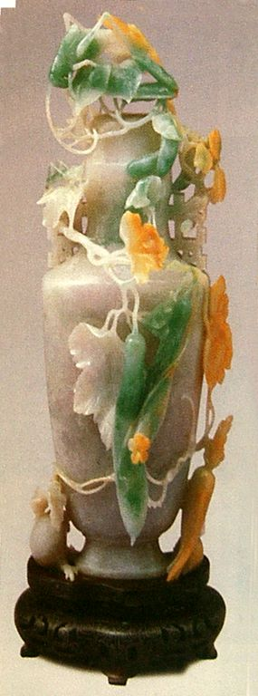图6-1-1 翡翠 三秋瓶 王仲元（1959年 北京玉器厂）设计制作
②（图6-1-2），同样是翡翠，同样是巧色，同样表现秋意，而在此以一种扁豆的果实，用满雕的形式，表现出秋的硕果累累，意境要在玉料中寻找，意境要在琢磨中深化。 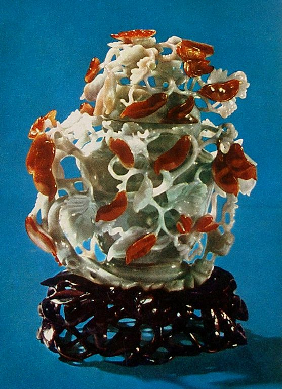图6-1-2 俏色翡翠 扁豆瓶 上海玉雕厂设计制作
3.优美的造型 ① 素瓶造型和位置 瓶的造型作为天然瓶的主体以及自然物的依靠体，它的造型除了玉料的制约以外，要使它成为优美的造型。瓶作为一个相对的独立体它有很多的样式，它的美感形式有它造型的规律，在此可以借鉴瓷瓶和其它器皿的造型，总之它们的造型有三类：典雅秀美形、富态饱满形和秀骨挺拔形。 天然瓶的造型从俯视来看一般是平扁形的，它的位置摆放是相对植物体、山石体等而言，通常瓶的位置在后右侧，植物体等在左前方；另外相反，瓶的位置在后左侧，植物体等在右前方；再有或左或右一侧。 ② 虚实疏密和构图 植物等形象疏疏密密、层层叠叠布于瓶身之上，在此合理的构图，疏密的雕琢有关于天然瓶的形式美感。当我们在瓶的周围雕琢形象时，时时在思考疏密、虚实和层次，实际上是在有意识地经营着虚的空间，有了大小不同、形态各异的虚空，形成了开放、松弛流动的空间，它的作用：其一，能显现瓶的光素优雅的造型，其二，也展现了实体丰满雕琢的生动气韵。 虚和实，疏和密的处理是千变万化的，我们在设计虚体时是为了实体雕琢的部分在构图上具有趋势，具有气韵，使作品产生节奏感和韵律感。这一原理源于中国画画理，雕琢中的留空档和光素之面的表现就是国画中的留白，因此，雕琢需要“留空”和“光素”， 其实这种刻意的有目的的追求和经营，和实体具有同样的表现力，正由于虚体和实体的相互作用，才能使玉器天然瓶充满生气和活力。 ③ 形体姿态需完美 以上讲的是整体布局的大效果，接下来要进行深入的、具体的描写，除了瓶子光素、工挺、雅致的造型以外，而大部分着重表现的是植物、山石、虫鸟等。 在玉器中形象的琢磨一般是比较完整，如在素瓶旁雕琢牡丹花，那么出现的是根、茎、叶、花朵，还有根部的山石；如果是一颗柳树，同样的有山石、根部、枝杈、柳条、叶片，在此玉雕的表现是完整的、简练的、优美的。 首先是树的主干和枝杈的造型美，在此要理解树的结构和生长规律来进行提炼、概括、美化，用线描的方式勾勒造型，虽然玉器中树形不是很大，但在感觉要有气势，其中要有苍劲的、挺拔的、流畅的线感；对于叶片的描写如果观察飘落的叶片造型：它那卷曲的、翻动的姿态，随风而去的叶片可能更为生动；对于花蕾的刻画在造型上更为饱满，用线上更为柔美。在此，我们可以借鉴花鸟白描的手法，学习竹刻、砚刻的的造型方法来提升玉器天然瓶的完美造型。 天然瓶的完美造型设计，主要体现在以上几个方面，尤其是整体的疏密构图和各部的造型优美，其把握着天然瓶的整体造型趋势和局部的丰富表现（图6-1-3、6-1-4）。 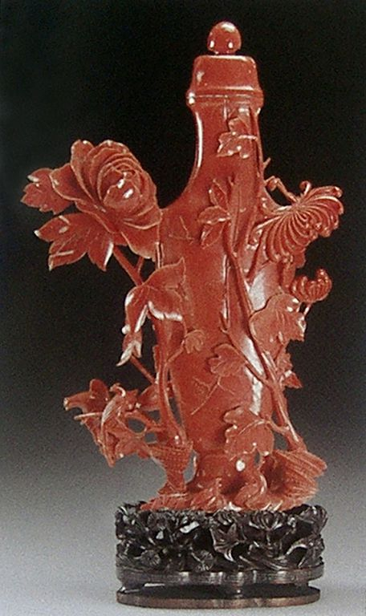图6-1-3 清代 珊瑚雕花鸟纹瓶
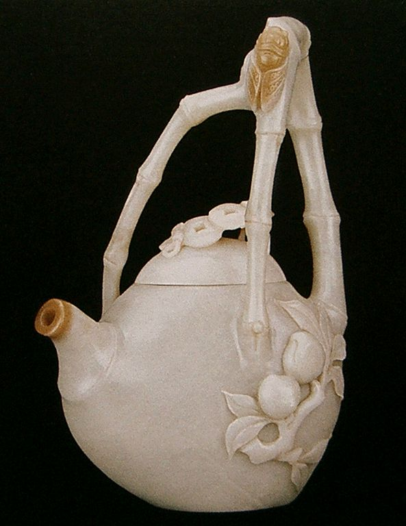图6-1-4 民国 青玉雕竹节提梁壶
二、形态质感的琢磨表现 天然瓶的工艺流程还是三个部分：块体岀坯、形体粗磨和精雕细琢。在此着重讲天然瓶植物配景的琢磨表现和理想效果。 1.有力的根须 根须象爪子一样深深的扎进石缝之间，根须勾形内侧用小扎眼工具使其深陷成为弧形，外形用小压砣使其成为弧面和块面的结合体，有的地方可以表现一、二个突出的结巴，同样是内圆外方。 2.苍劲的主干 根须上延的主干部分有着极强的表现力，用压砣、杠棒、扎眼等工具琢磨出主干的苍劲、老道，同时表现出它的转体、上升的趋势，在屈伸转势的树干体上，有压砣琢磨的弧面，有钢棒淌出的凹面，有扎眼勾出的深深开裂，还有大小的结巴，同样是内圆外方。用特有的雕琢技法充分表现出树的势态、苍劲和野趣。 3.交织的枝杈 用砂钻斜角打出枝杈的空洞，用扎眼施以推、拉、塞等方法琢磨出它们的前后排列，用压砣、杠棒琢出枝杈间大小的空间，磨出圆中有方的，转势上升的感觉。 4.灵动的叶片 叶片它是有生命的，要雕琢出它的姿态和表情，用小压砣磨出它整体的起伏，用蛋形工具淌出它灵动的翻卷，用勾砣勾出它纤细的经脉，就是在叶尖的收尾还有它细微的表情。在许多叶片的组合中，和主干、枝杈是紧密相连的，虽然叶片间有各自的姿态：顺势的、转势的、逆势的；还有强力的翻卷，优雅的飘动，然而它们是相互呼应的，共同组成一片灵动的韵味。 5.娇美的花朵 花朵是玉作观赏的重点，花朵含苞欲放的姿态正好符合玉作的特点，含苞有了浑然温润的体感，欲放表现出花瓣微张、娇美的姿态，同时有了玉的玲珑和剔透。大小的扎眼可以雕琢出花瓣的层次感，压砣可以使花瓣有了姿态，蛋形砣可以表现出花瓣边缘的细微变化，在此有了砣的琢痕，尤其是“淌”的工艺，使花朵更为柔美。 天然瓶的雕琢着重是对于自然植物的刻画和描写，使树枝苍劲有力，使叶片灵动飘逸，使花朵温润娇美（图6-2-1、图6-2-2）。 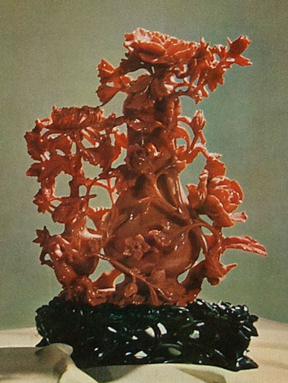图6-2-1 珊瑚 牡丹菊花瓶 上海玉雕厂设计制作
图6-2-2 白玉 花卉双管瓶 作者：李国翔
三、雕琢施艺的注意事项 在总体的工艺制作中和空间的理解上，瓶身的造型比较好掌握，而自然物的造型虽然有一定的自由度，但在空间造型上存在着错综复杂的关系，给理解带来一定的困难，也给雕琢带来一定的难度。这种对雕琢空间的理解，其一，是观看思考和勾画，努力弄懂植物的来龙去脉和内部结构。其二，是随着雕琢的渐渐深入和不断的勾画，理解也随之深入，空间结构也逐渐明朗，因此，在整体的空间雕琢中特别要注意的事项给以提示。 1.盘曲交搭要自然 在正体形象的雕琢处理中，由于玉性较脆，一般不会出现个体形象出挑、悬空，这样容易断裂，因此，天然瓶的各形象之间总是相互联系着、依靠着、交搭着。天然瓶有着复杂的结构，其中有树枝的交叉、藤蔓的盘曲、叶片的重叠等等，在此，琢磨需要思考两个问题，其一是牢度，其二是美感，因此，交搭不仅仅是牢度的需要，而且更是形式美感的需要，所以在整个作品的重叠、交搭安排一定要自然，切记，不要为了牢度而生硬的交搭。 2.穿枝过梗需开门 在琢玉中所谓的“开门”特指在雕琢结构比较复杂的形象时工具比较容易使用，可以进行深入加工，所谓的“关门” 特指在雕琢结构比较复杂的形象时工具比难以使用，工具深入比较困难，不易雕琢，因此，在设计时要有疏密变化，使疏的部分容易下工具，以至深入到密的部分，而密的部分的枝梗、叶片、花朵前后层次排列要较差，不要重叠，特别是叶片、花朵不要成正视，而要以一定的角度，约成45度，这样既美观又有空间可以下工具，总之，在密的布局中要给于下工具的“开门”空间，便于雕琢。 3.小枝要肥空斜透 雕琢细小的枝干时特别要注意不能象象牙那样雕法，过于的纤细会使玉质有枯的感觉，因此，小枝、细枝都要有肥的、饱满的感觉，这符合玉的浑然温润的质感。 雕枝干如果是采用镂空工艺，那么对于透空的处理不要采用对穿的方式，避免空洞一眼见底。透空穿插于枝干之间，有圆的、三角的、长形等的造型，都应该采用斜透的形式，使它造成半遮半掩的效果，这样在造型上富有美感，观赏上富有情趣。 4.适应变化要调整 天然瓶的造型除了瓶子以外，其它部分的造型都带有许多不确定因素：其一，从平面勾画到立体的雕琢会存在着一定的差异，需要进行合理的调整；其二，随着雕琢的深入，材料中斑点、裂痕、瑕疵等的出现需要跟进行更改、调整；其三，在雕琢中随着工具的深入、磨制，无意间会出现好的形态、砣痕，在此要随机的把握，这些变化和调整贯穿于整个天然瓶的雕琢之中，为的是天然瓶的造型更加完美（图6-3-1、图6-3-2）。 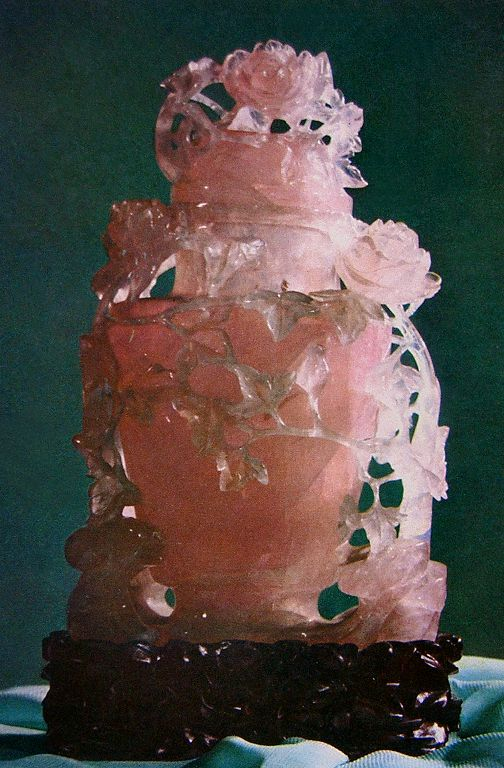图6-3-1 芙蓉石 牡丹花瓶 上海玉雕厂设计制作
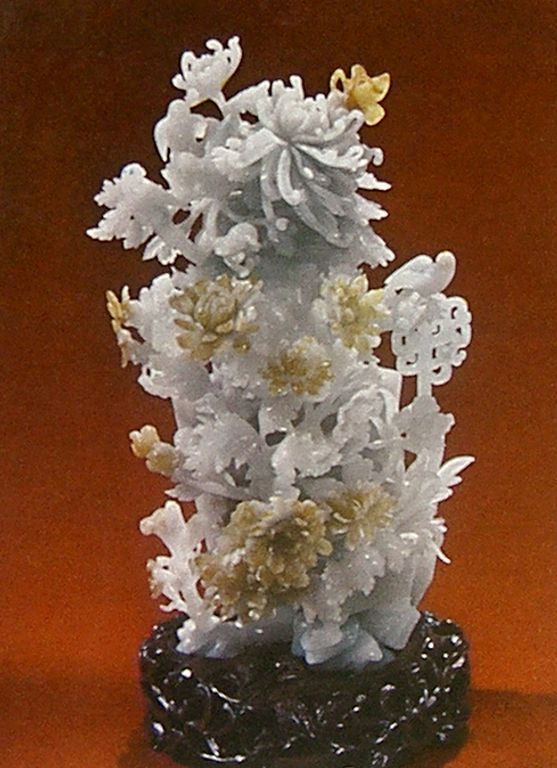图6-3-2 翡翠 菊花瓶 设计：朱其法 制作：张建平
天然瓶这类玉器，除了对称瓶的造型以外，同时也有植物的瓜果、叶片成为自然造型的容器，再配以植物、花鸟的组合，二者优美与和谐的组合直接影响着作品的视觉效果，因此，对于形象之间的相互搭配，在设计上要作艺术上的处理，在雕琢中要作的合理经营和安排（图6-3-3至图6-3-6）。 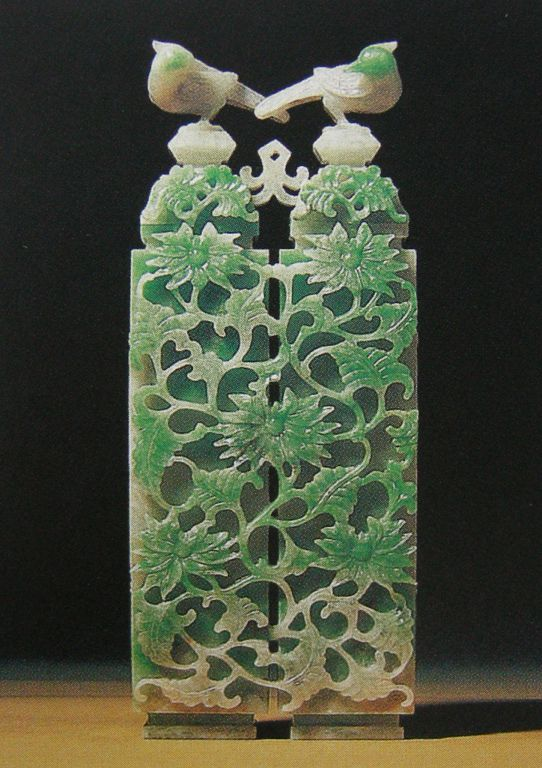图6-3-3 清代 翠玉 双连盖瓶
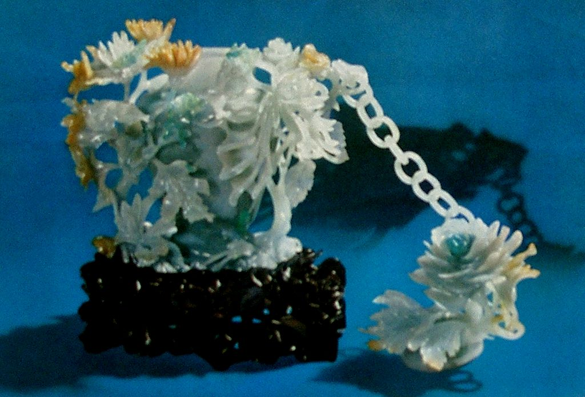图6-3-4 翡翠 链条瓶 上海玉雕厂设计制作
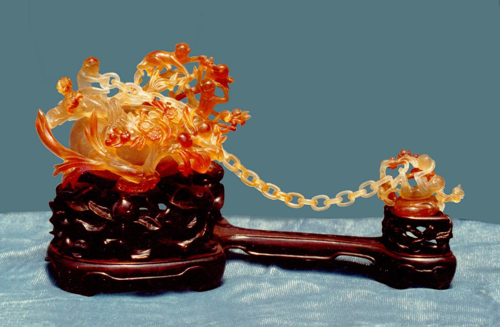图6-3-5 玛瑙 猴桃水盂 赵丕成设计制作
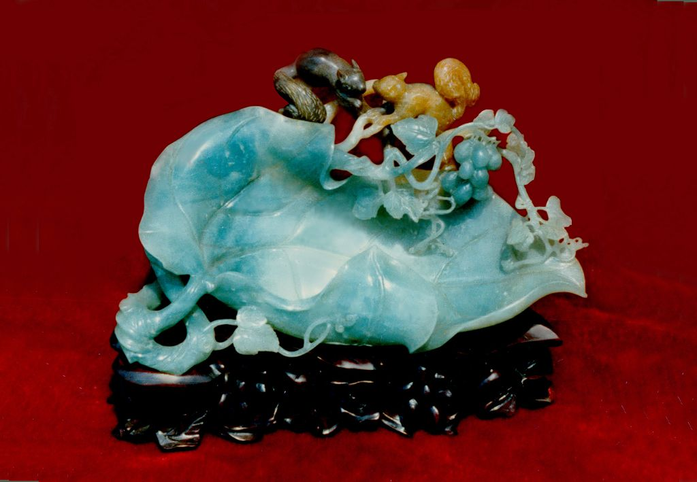图6-3-6 贵翠 松鼠葡萄笔洗 赵丕成设计制作
实训项目与思考练习： 1.设计、制作玉器天然瓶1件。 2.将“因料设计、因材施艺|的琢玉方法，合理的运用到天然瓶的设计和制作中。 3.在天然瓶的琢磨过程中，使琢玉技巧得到进一步训练和提高。
第七章 端庄玉炉精气神——三足炉玉器工艺 玉器在自身的发展过程中不断的吸收了其它的艺术形式，玉炉这一类产品大部分借鉴青铜器的造型和纹样，特别是四方鼎、三足炉、提梁卣，还有爵、觚、樽等造型渐渐出现了玉器的身影，然而这些玉器虽然没有青铜器之狞厉，然而从它的器型和纹饰上来看却有了凝重而典雅、雄健而优美，既保留了青铜器的雄浑霸气又增添了一份温润和柔美，表现了玉炉特有的精神气质。 学习目标： 1. 熟悉三足炉的造型特点 2. 掌握三足炉的设计规律 3. 掌握三足炉的工艺过程 教学要求：通过本章三足炉玉器工艺的实训课程，使学员能基本掌握三足炉的基本工艺，进一步灵活掌握不同工具的使用方法，熟练掌握圆雕、浮雕、透雕、线刻、等琢玉技巧；同时学会运用美的原理，对器型比例、浑然造型、疏密布纹、玲珑施艺等进行合理的经营和琢磨。 实践项目：三足炉设计和制作 一、三足炉的因料设计 三足炉的样式多种多样，玉三足炉的设计，包括它的样式和造型风格关键还是由玉料的造型和作者的审美来决定的。 1.玉料选取 三足炉的玉料选择，要块度大，料形整体，瑕疵少，色泽匀的玉料作为三足炉的理想材料，由于三足炉是对称、规则的器型，瑕疵不能象制作天然瓶那样容易去掉，因此，对于玉料的选择要仔细察看，是否有深度的色斑和暗裂的存在，以免在制作过程中产生不可去净瑕疵的现象，使玉炉造成美中不足的遗憾。 2.合理用料 炉身的用料应该把好的玉料放在正面和上部，炉盖和炉身最好是一块原料上分割而成，这样色泽较为统一，在开料时把好炉身和炉盖的比例，尽量用足玉料。 3.勾线定位 首先要把炉身的上口平面和三足的平面从四周来看要达到一样的高度，即成平行线，然后用画十字线的方式找出上口和底部的中心点，以此为标准，自上而下、掌握比例、勾画墨线，其中包括炉身的俯视图和底部三足的定位，两则吞头（虎头）、炉圈的定位以及各部分的勾画。 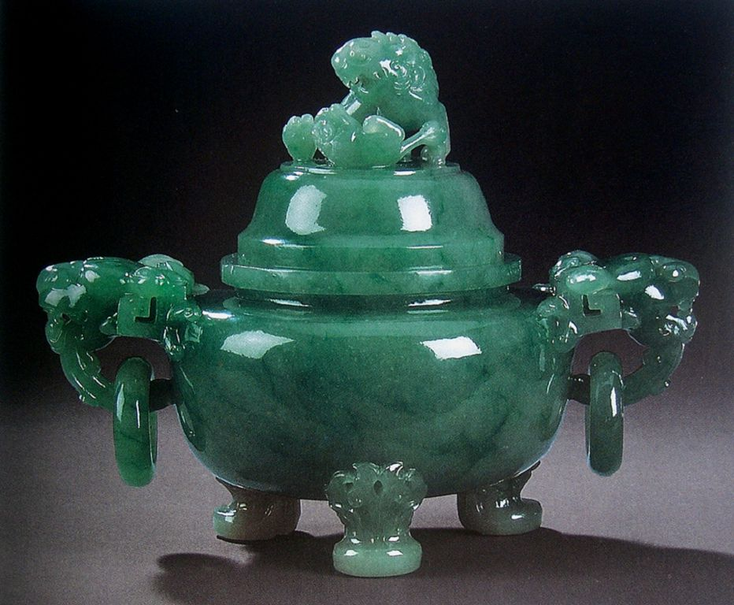图7-1-1 清代 翡翠 活环龙首耳三足盖炉
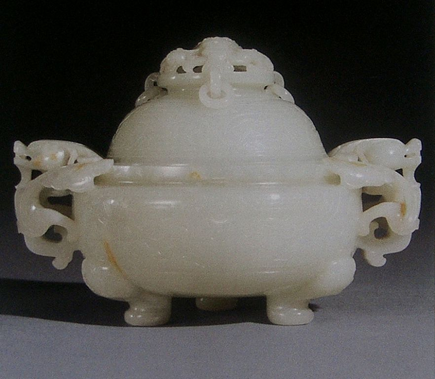图7-1-2 清乾隆 白玉雕双耳三足炉
二、三足炉的造型特点 玉器三足炉是仿古炉瓶中典型的产品，其造型是从古代陶器、青铜器香炉演变而来，造型对称、庄重、大方、朴实。 1.三足炉的结构部件 ① 炉身：主体造型圆润饱满，有的赋有纹饰。炉身采用圆雕的形式，表面薄浮雕纹饰的雕琢俗称“了面”。 ② 吞头：似乎是炉的双肩，对称的龙头或虎头，连接着流畅、卷曲的香草，有了装饰的韵味和玲珑透雕的工艺。 ③ 炉盖：盖上装饰有狮子或盘龙，雕琢整体而通透。 ④ 三足：健壮有力的圆雕，三足鼎立，稳健中有了屹立的气势；足跟和炉身的结合处装饰有高浮雕的兽面纹，增强了玉炉的威武和神气。 ⑤ 炉圈：和吞头相连、垂挂的耳圈。有的在炉盖上也有三个炉圈，位置和三足上下对齐。炉圈给庄重的玉炉增添了一分灵动之感。 2.三足炉的整体造型 三足炉的造型基本有以上五个部分组成，各个部分的造型都有各自的特点，既有主体的几何器型，又有装饰动物、植物等形象组合而成， 而且琢磨形式又有圆雕、透雕、高浮雕、薄浮雕等，因此，在整体造型关系上有着严谨的结构和一定的比例，使多样的造型统一在整体、优雅的三足炉器型之中。 三足炉的造型形式较多，有高三足炉、矮三足炉，又有植物造型，有动物造型，有几何造型等，三足炉玉器的总体形式美感呈现出古朴、端庄、典雅的风格（图7-2-1、图7-2-2、图7-2-3）。 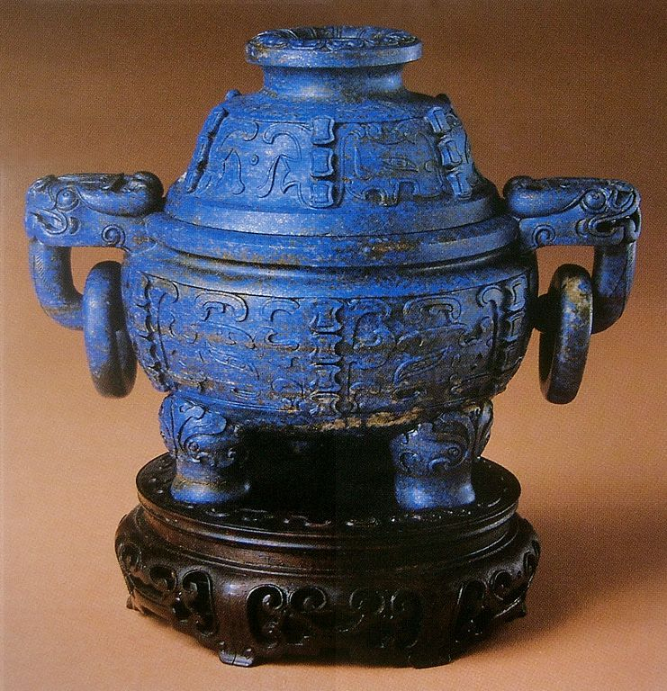图7-2-1 清中期 青金石兽耳活环炉
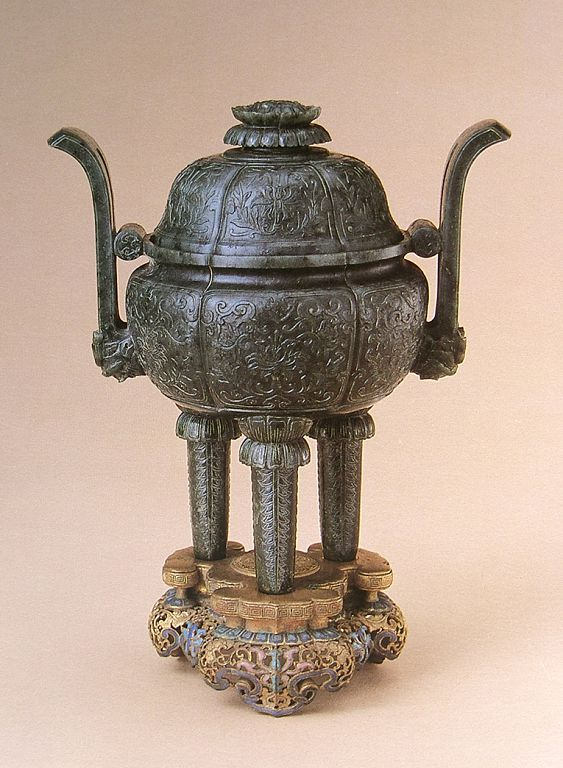图7-2-2 清代 和阗碧玉莲纹三足炉
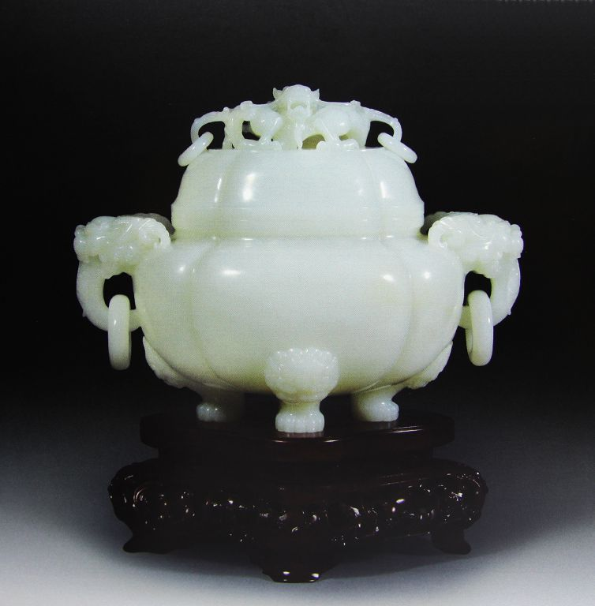图7-2-3 白玉 白玉炉（天工奖最佳工艺奖）作者：宋鸣放
三、三足炉的工艺流程 由于三足炉上的纹饰多样，结构复杂，因此，学习、雕琢三足炉可以在琢玉技巧上得到全面的训练，一方面是对前阶段的琢玉技巧进行综合的训练，另一方面也是为今后的玉器设计和制作打下了扎实的基础。 (同时参照图稿7-3-1至7-3-10) 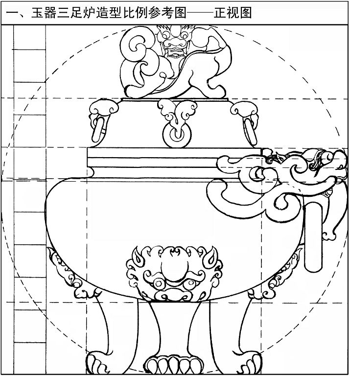图7-3-1
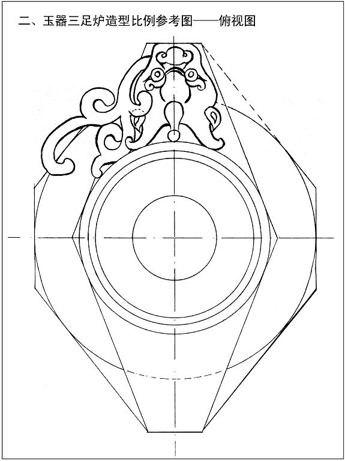图7-3-2
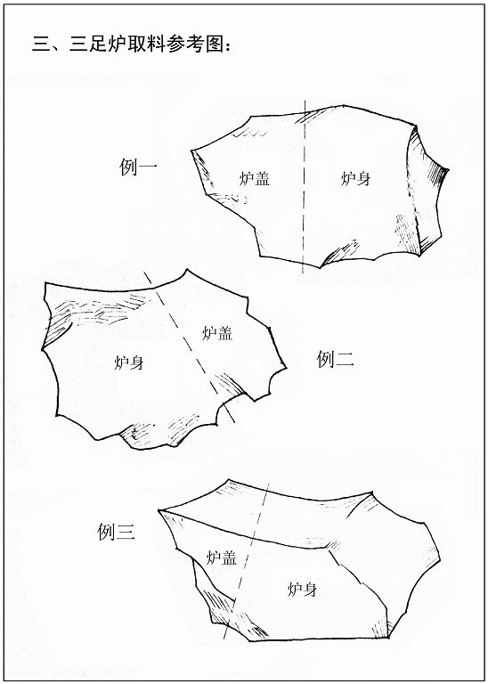图7-3-3
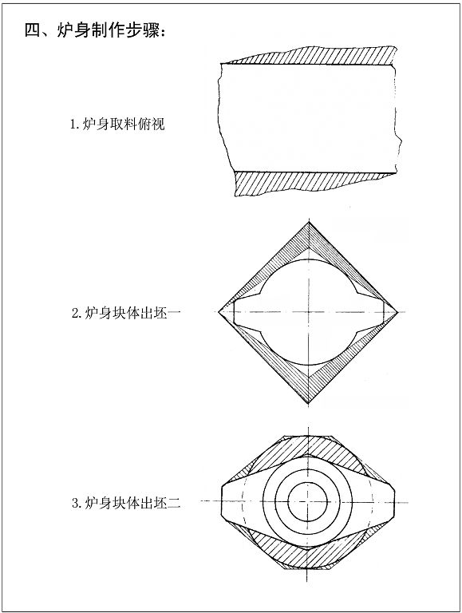图7-3-4
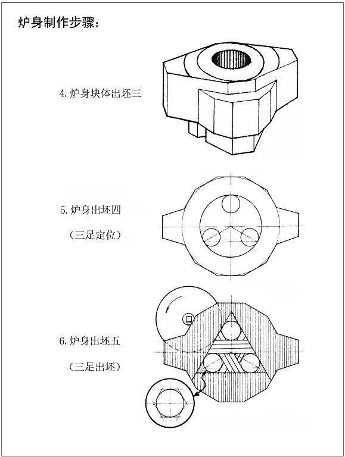图7-3-5
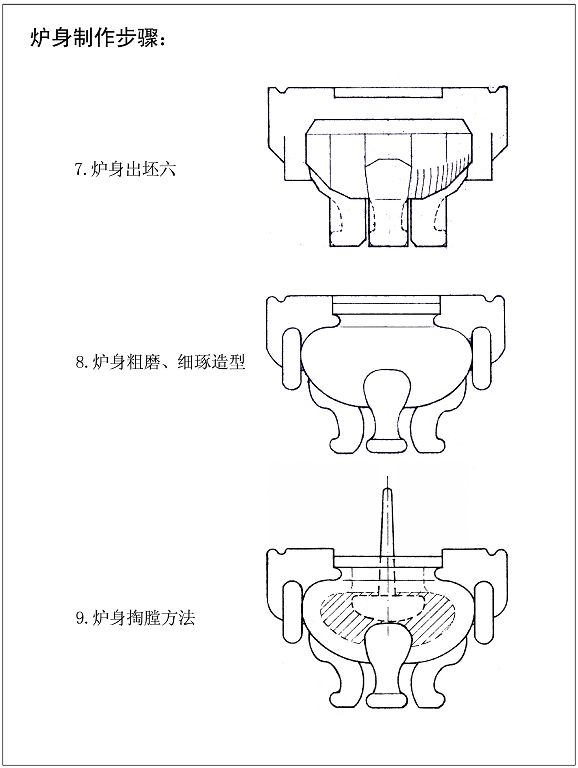图7-3-6
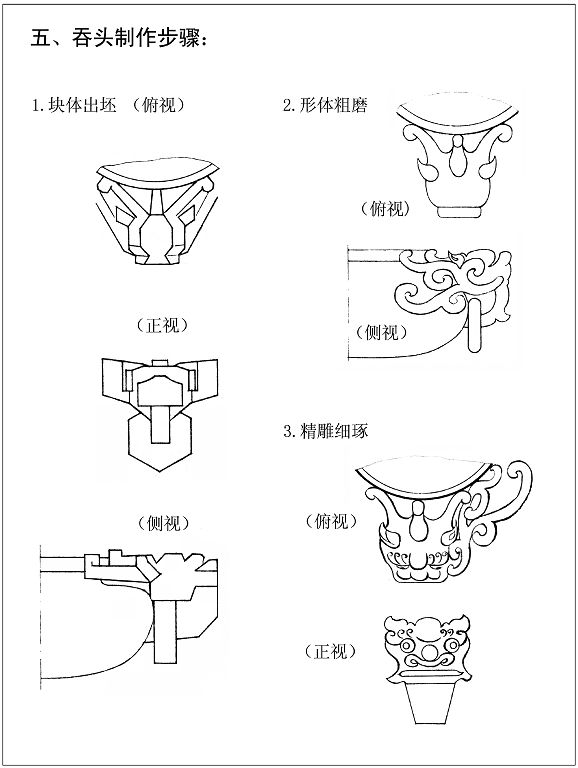图7-3-7
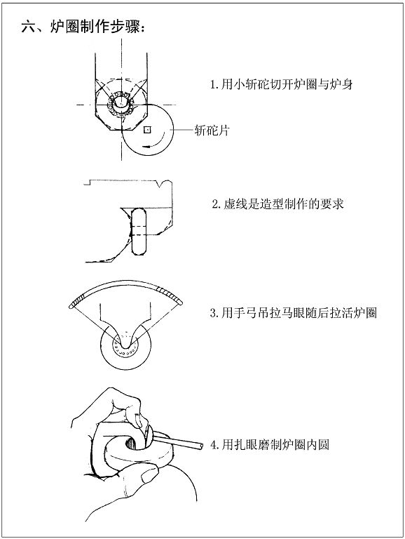图7-3-8
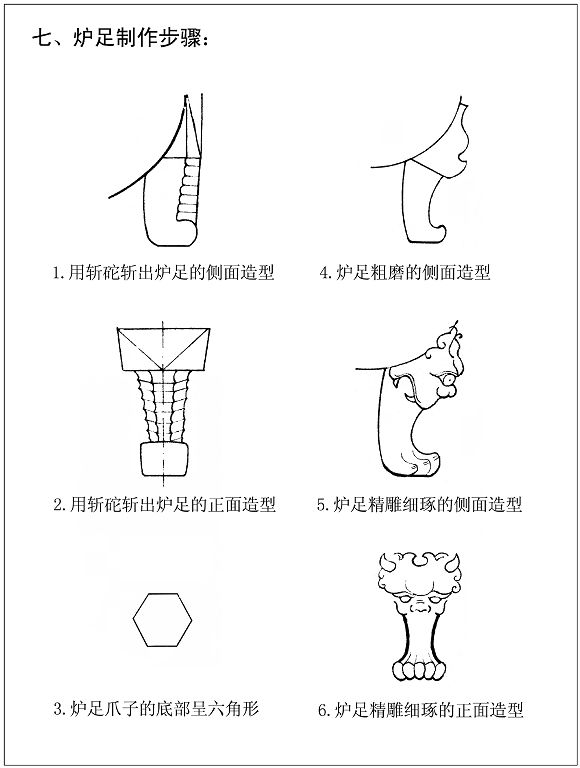图7-3-9
 图7-3-10 图7-3-101.块体岀坯 块体岀坯即细砂岀坯阶段：是扦砣（现代一般不使用）及斩砣的工艺，关乎于炉身、炉肩、炉圈、炉足的块体工艺程序： ① 先将炉身斩成菱形，其次斩出炉口，然后再斩出炉脚的三角形。 ② 斩出两个吞头、炉圈的高低大小。 ③ 将炉肩的菱形削圆，两边要晓得相等，吞头延伸的香草部分要少削一点。 ④ 逐一将三个脚分别斩成六角形。 ⑤ 斩出炉腹，使它成为锅底或半皮球状。 ⑥ 斩出三足的凹档。 斩砣工艺注意：每斩一个地方，先要懂得它的形状，斩时正确，既不能少，更不能多；在斩时还要考虑到斩砣是圆的，防止中间过深。 2.形体粗磨 形体粗磨即“粗砂岀坯”阶段：掏砣、冲砣、压砣、扎眼等工艺。 ① 炉身粗磨： 用粗砂（现代用新工具）把炉身外围磨的浑圆、规整，两肩对称。用粗砂掏磨炉身膛内，内壁要磨得厚薄均匀，与外部造型一致。 ② 吞头（两肩立体虎头）、炉圈粗磨： 吞头是耳，炉圈是环，二者是一体的，因此，在工艺的处理上要一起考虑。先后用大压砣、小压砣把吞头、炉圈磨平、磨圆，两边对称，再用扎眼把吞头和炉圈交界的“三角地”磨干净，然后打骑马眼，这样可以用细铅丝穿过，再两手轻轻地来回提拉，同时加以细砂和水，在拉磨的过程中，要胆大心细，渐渐的使吞头和炉圈分离（现代可以用钻石粉尖针挑磨开吞头和炉圈）。分离的炉圈是带着棱角的，再用扎眼施以扒、塞、刨等工艺，使其圆润、饱满。切记，扎眼不能比缝隙小，以免在旋转中扎眼滑入缝隙中，造成炉圈崩断。 ③ 香草粗磨： 香草作为吞头的延伸连接着炉身，同时又起着装饰作用，粗磨时使用压砣、扎眼、杠棒等工具磨出它的造型，两边要对称，既要贴切地搭在炉身上，又要有空灵感。 ④ 虎头（三面浮雕）粗磨： 虎头是连接炉身和脚的装饰物，先用大压砣大体磨出老虎头的形状，并使三只位置、大小、高低统一，再用小压砣和扎眼等工具基本琢出脑门、眼睛、鼻子、嘴造型。 ⑤ 炉足粗磨： 先用大压砣将三只足的棱角磨掉，略微弯曲，上粗下细，再用小压砣等工具琢磨出脚跟、腿凹档、脚趾等，同时三足统一有力。 ⑥ 炉盖工艺: 炉盖的造型装饰，炉盖耳朵的装饰主要有灵芝、老虎头、羊头、香草等。炉盖顶上主要有盘龙、云龙、独角龙、香草龙等。 炉盖岀坯：先用斩砣大体斩出炉盖的造型和盖顶上的龙。 炉盖粗磨：再用压砣等工具进一步磨出、磨正炉盖的造型和龙的造型。 ⑦ 炉、盖投嘴口工艺： 此项工艺犹如公榫和母榫的结构，炉身口是母榫，炉盖口是公榫。先用斩砣的斩出圆的 母榫，然后用压砣把母榫磨得圆，并深浅一致，以同样的方法留有余地斩出、磨好公榫，公榫的磨制要非常小心，在磨得过程中要不断的把炉盖试着盖在炉身上，看它是否吻合，当磨到基本吻合时，可以在二者之间加上细砂，用双手使它们不断的转动、碾磨，这样可以使二者更加紧密，投嘴口的工艺要求不动摇、没有缝隙，转动紧密、顺滑。 3.精雕细琢 三足炉的精雕细琢是一项复杂和精到的工艺（了手工艺），由于形体的多变，因此，在工具的使用上是多样的，一般是从大工具用到小工具，也就是从大面积的形体琢磨到小面积的造型。 ① 炉身了手： 炉身了手在粗磨坯体的基础上进一步把圆体的炉身用细砂把它磨得周正、圆润，弧面光挺。 ② 吞头、炉圈了手： 虎吞头的了手要表现出虎头的威猛气势，两眼圆瞪，鼻子饱满，脑门宽厚，牙齿锋利有力，两耳饱满似猫耳；两个炉圈要用细砂细心的磨制以至圆润饱满，特别是琢磨炉圈的内圆更要小心，不要使工具在其内卡住，以免损坏炉圈。 ③ 香草了手： 香草弯曲富有弹性，粗细厚薄匀称一致，香草要施以“淌”的工艺，形成条形的凹弧面，使其富有流动的气韵，结尾的卷子头要从外向内旋转刨圆，并有力度；香草的三角地要用小工具琢磨干净，对于香草的边缘不能有丝毫的损伤，呈现自然、流畅、清爽之感。 ④ 虎头了面： 三面高浮雕的虎头，大小、高低位置相同，虎眼用小扎眼勾圆，磨成半球状似乎镶嵌在里面，二眼相距一个眼球为宜；眉毛根粗，眉梢略细卷成卷子头，收头要圆、略高；双耳根部用扎眼琢磨使其结构清晰，耳轮用小压砣琢磨，使耳尖稍尖，耳洞使用小蛋形工具从耳尖至耳根渐渐加深；鼻子要肥似三瓣大蒜，中间要圆而翘；口宽，龇牙咧嘴，嘴角上翘，凶相中带着笑意。 ⑤ 炉足了手： 先用大压砣将三只脚细细的磨制，使其光挺，再用杠棒圆润的琢磨腿的凹档部位，使三足微弯而挺立；用压砣等工具琢磨出有力而圆润脚跟，用快口压砣琢出脚趾内扣有力。 ⑥ 炉盖、盘龙了手： 用压砣、杠棒等工具把炉盖磨得细腻、圆润、周正。 用多样的工具细致的琢磨出盘龙：盘龙形似壁虎，尾如香草，身如游蛇；腿爪与狮子的腿爪相似；四腿动作有力生动。 炉盖上的盘龙在整体造型上呈半球状，头在正上方，身尾高低起伏的盘曲成圆状，四腿肌肉饱满，脚爪有力的均匀的蹲于四方，盘龙整体造型空灵，在镂雕的过程中，空洞的处理要合理、得当，不要出现对穿的空洞，盘龙的头、身、尾、足的搭配要自然合理，三角地的“多玉”要去净，而又不能脱节，用多种工具细致的琢出磨各局部的造型，使盘龙玲珑剔透而又稳健的蹲在炉盖之上。 三足炉在组合结构上搭配严谨，因此，在工艺处理上要求严格，整体造型要规矩、对称、稳健，比例合度。具体工艺要求：子口的紧密，炉膛的均匀，炉圈的灵活，香草的空灵，盘龙的矫健，吞头、虎头的圆雕和浮雕都必须以工见长，显示高超的琢磨技巧和完美的艺术造型（图7-3-11、图7-3-12）。 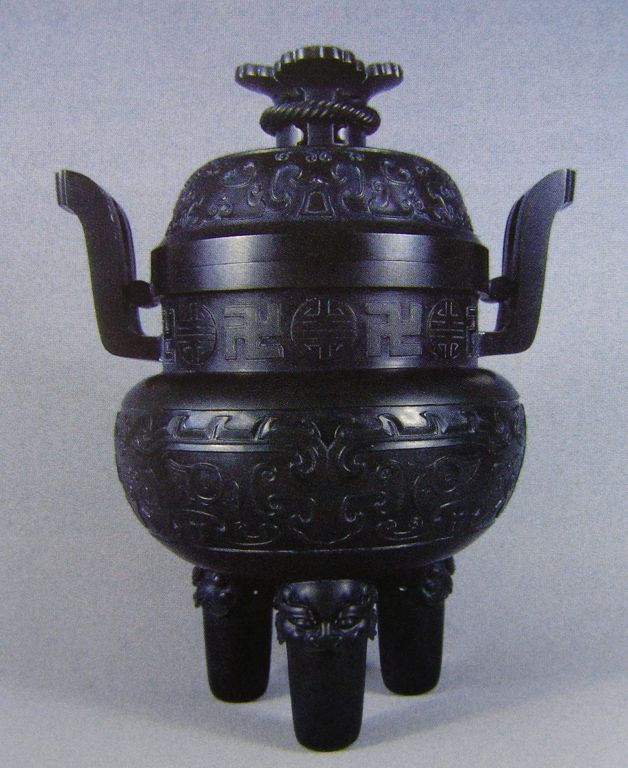图7-3-11 和田墨碧 三足炉 作者：马庆华
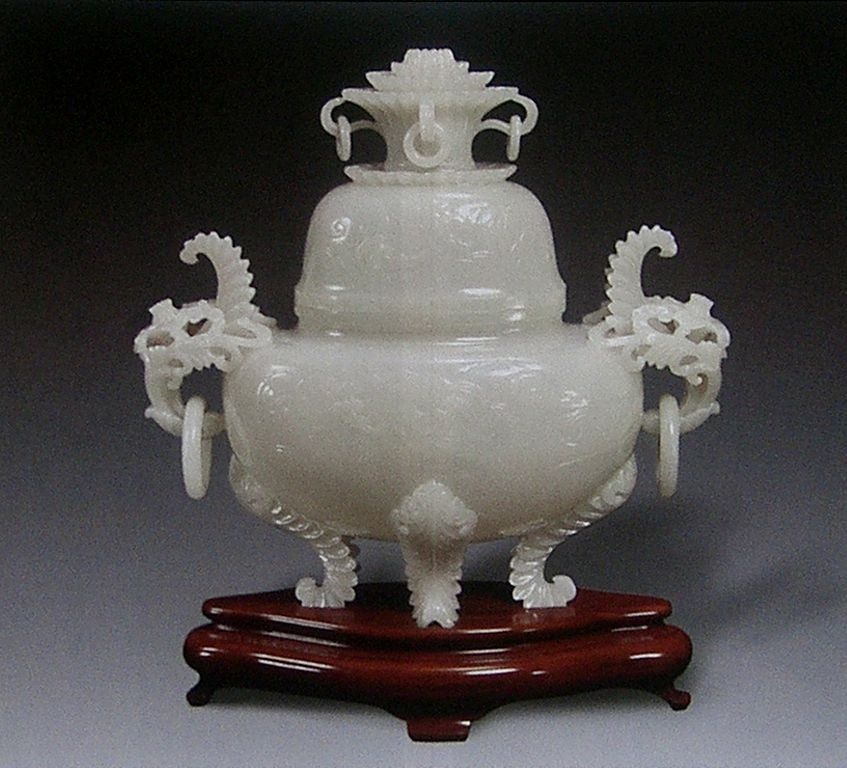图7-3-12 民国 青白玉仿痕都斯坦工双耳四足炉
玉炉除了三足炉以外还有其它各式各样的款式，造型一般来自于青铜器，有的给予了设计和创新，在造型上给人以古朴典雅、庄重精美、气韵饱满的精神气质（图7-3-13至图7-3-21）。 图7-3-13 清中期和田玉四管式炉、瓶、盒 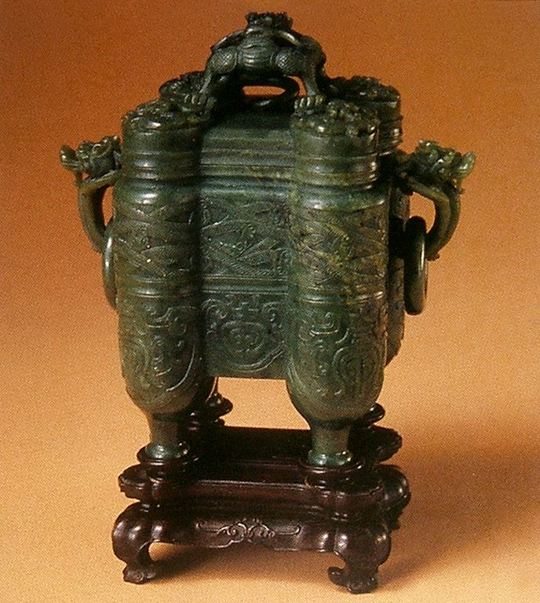图7-3-13 翡翠 熏炉 设计：王玉 制作：韩广彬
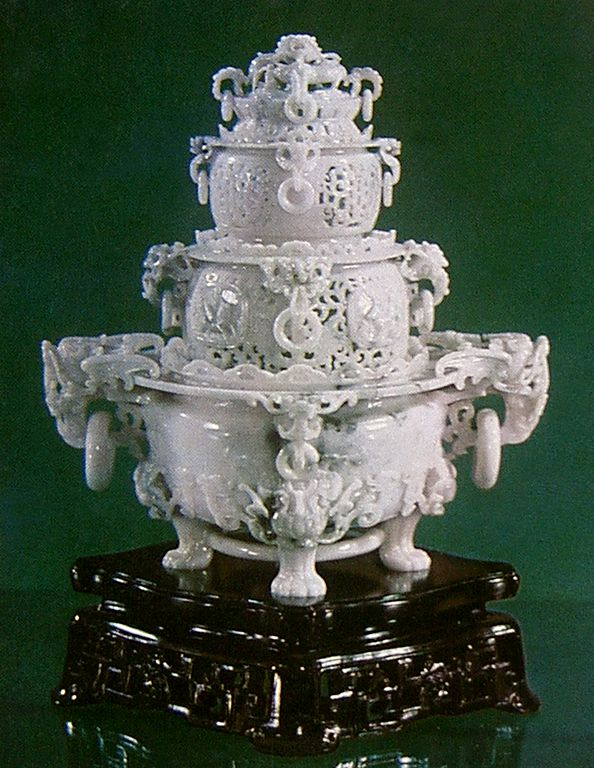图7-3-14 翡翠 熏炉 设计：王玉 制作：韩广彬
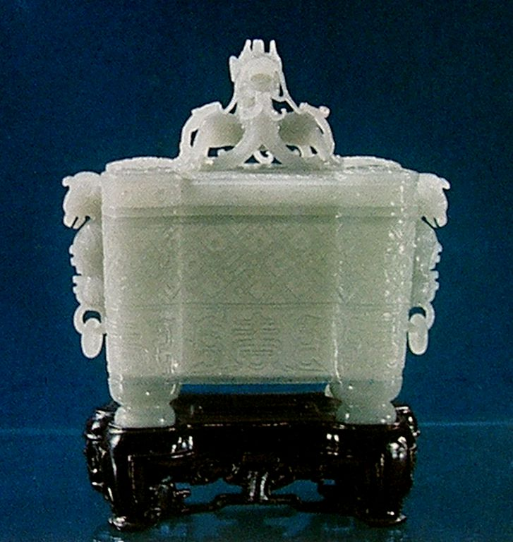图7-3-15 白玉 四喜炉 设计：刘纪松 制作：沈建平 宋鸣放
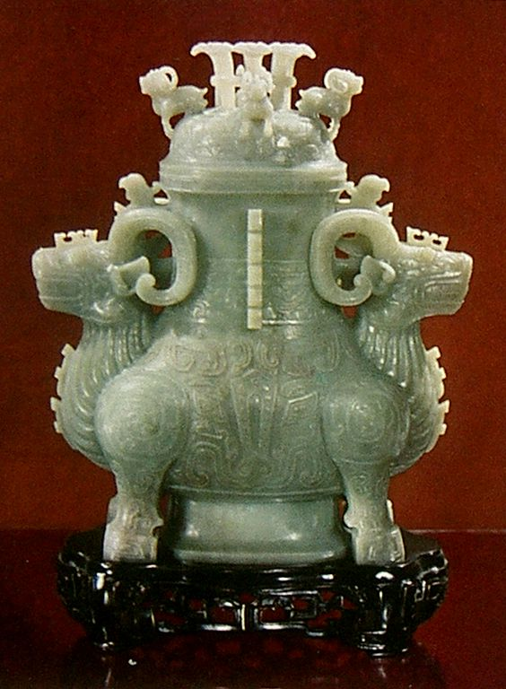图7-3-16 黄玉 双羊尊 设计：刘纪松 制作：蒋灿林 周锦 方国全
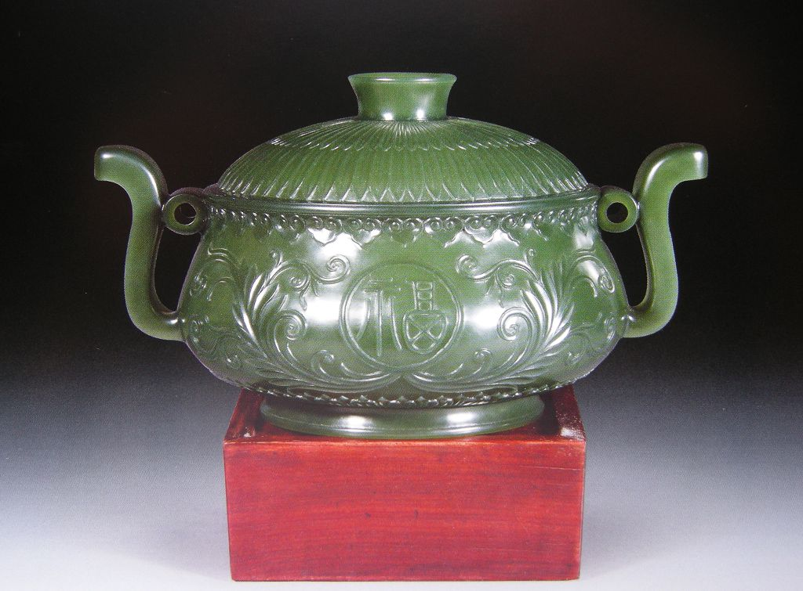图7-3-17 青玉 薄胎炉（天工奖银奖） 作者：蒋喜
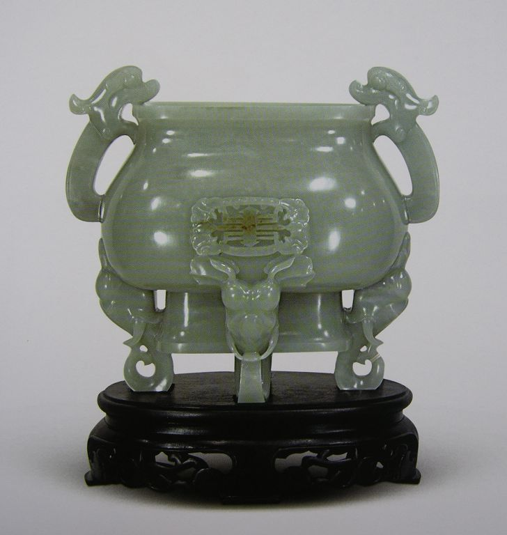图7-3-18 白玉 炉瓶(神工奖银奖) 设计：陈建和 制作：龚靖云
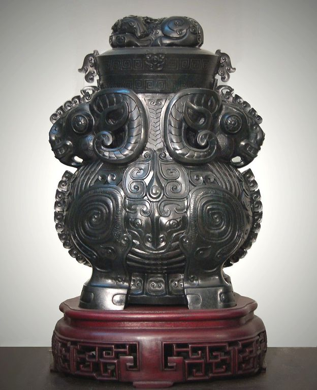图7-3-19 碧玉 羊尊(神工奖金奖) 设计：唐培林 制作：杨达秀 蒋大年 韩永年
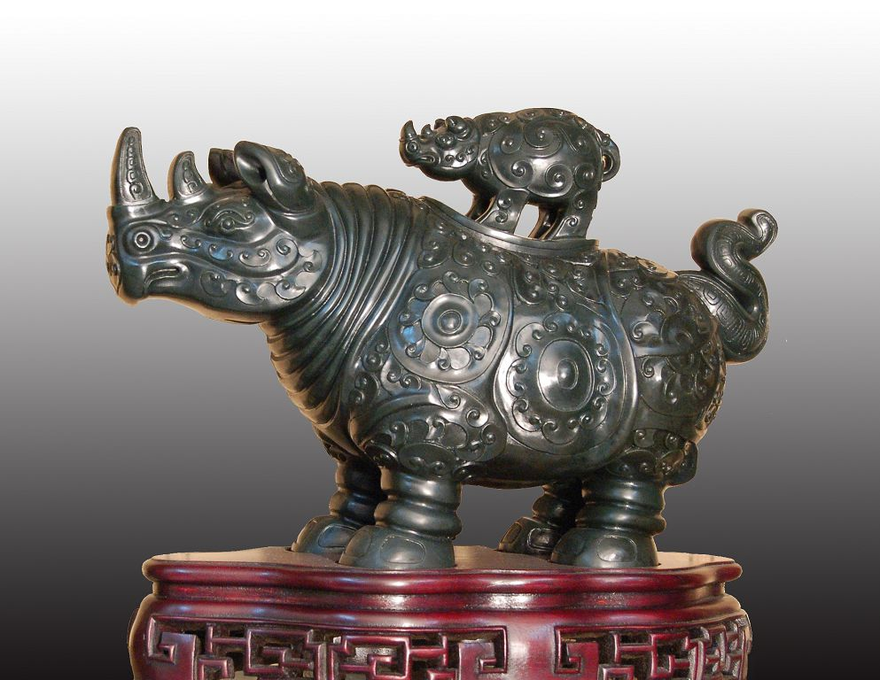图7-3-20 碧玉 犀牛尊 设计：唐培林 制作：杨达秀 蒋大年
玉是美好的象征。当我们的祖先把一小块美丽而坚硬的玉石经过细心的打磨、钻孔，并用自己捻的小绳穿戴在颈上、胸前，从那一刻起，最原始的审美意识和一种最早的信念就融入在玉器之中。经过了漫长的历史进程，玉意不断被赋于了新的含义：有天地通灵说、辟邪消灾说、道德楷模说、延年益寿说等等，总之，赋予玉一丝情缘、一个企盼、一种祝福。由此，琢玉被赋予了美好的想象，并形成了“琢玉呈吉祥，才能合人意”的琢玉观念，美好的玉意得到了长久和广泛的传颂，并有了新的诠释。 实训项目和思考练习： 1.设计、制作玉器三足炉1件。 2.学习古代三足炉和现代三足炉以及其它器皿的造型。 3.学习古代器皿玉器的多样纹饰和合理布纹。
第八章 天工玉意自然美——山子玉器赏析
山子玉是玉器雕琢中的一种形式，它依照玉料形体，巧作山水的造型。此时的“相玉”已不仅仅是“应物象形、依势造型”，而是要深刻领悟玉意，在形、色之间去感悟玉意；在“相玉”之中去寻觅着山川、流水的踪迹；琢磨出天地之间的生命律动。通过与玉的对话、交流和体悟的过程，使心灵和玉意产生共鸣，此时，砣轮渐渐的勾画出玉意，琢磨出山子玉器的自然美意。 学习目标： 1. 了解山子玉的自然美和雕饰美 2. 熟悉多种雕刻形式的灵活运用 3. 懂得艺术经营和玉意表现 教学要求：通过本章的学习，使学员能理解天然去雕饰是玉器琢磨的最高境界，使玉意和人意达到高度的融合；学会多种雕刻形式的合理运用；认识到艺术经营能提升玉器的美感和观赏的意味。 一、自然的雕饰 山子玉的雕琢，追求着天然去雕饰的理想境界。在中国艺术史上有着两种对美的认知，既“错采镂金”之美和“芙蓉出水”之美。前者为雕饰之美，后者为自然之美。而治玉艺术正是使这两种美感自然融合,完美统一，达到“绚烂之极归于平淡”的境界，这也正是玉的性格对琢玉的要求。而山子玉器的雕琢正是琢玉者根据玉料的自然形态赋以幽山流水之想象，使自然之境融于玉料特质之中，将雕琢美和自然美得到高度、完美的统一。 1.雕琢美 琢玉的雕琢美包括两个方面：造型美和技巧美。 其一，造型美由外形和纹饰组成，图饰大部分来自于我们民族特有的吉祥意蕴和审美情趣。为了使玉器传递美好的信息，治玉运用了最简练、优雅、生动的线形，去表现玉器优美的形态和完美的纹饰，无论是形态之线还是纹饰之线的表达全在自然中流出，这是雕琢的自然，刻意的自然，经营中的自然。 其二，技巧美即雕琢之美。千百年来，玉工总结了一系列的琢玉技法，无数作品展现出作者驾驭玉材和工具的能力。运砣沉着稳健，力到工就；勾线犹如神助，高古游丝；刀法多变，有鬼斧神工之力。丰富、精妙的琢玉语言，使玉器的形式美和意蕴美得到充分展现。赏玉有“绚烂之极”之说，印证了玉器自古就提倡巧夺天工的雕琢美（图8-1-1）。 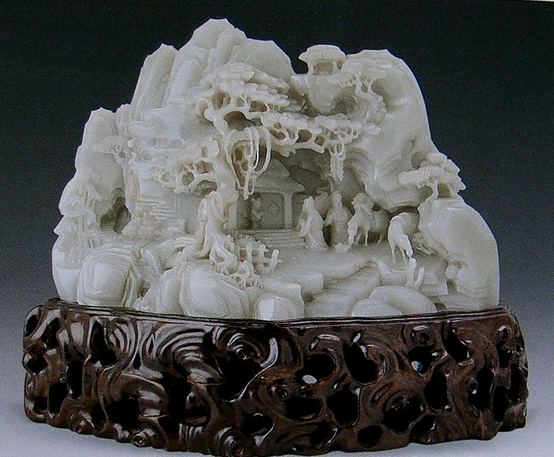图8-1-1 清乾隆 三顾茅庐山子玉
2.自然美 山子玉器的自然美的体现，还在于要遵循“忠实于天然玉质材料”的琢玉原则，因此，经过历代琢玉，形成了一整套“因料设计、因材施艺”的治玉方法和艺术特点，其中也蕴含着一个重要的美学思想，就是“要质地本身发光，才是真正的美”。 完整的山子玉经历了亿万年大自然的历练，蕴含着特有的自然美，而每一块玉料又有不同的形态、皮质、色泽等，因此，山子玉的琢磨不仅要有高超的技巧，更要有不凡的智慧，深刻领悟玉质、人意和技巧的内在联系，巧妙运用，融会贯通。在雕琢中去寻求一种和玉的温润性情、形态色泽相吻合的形式语言，在造型上无论变形或抽象、奇异和俊俏、精细和光素，都要应顺玉的本质特性，造型、图形和工艺要服从于玉料的本质特征，具有匠心的治玉就象治理土地一样，要因势利导，使人工的雕琢提升到自然的“天工”，达到雕饰美和自然美的统一（图8-1-2）。 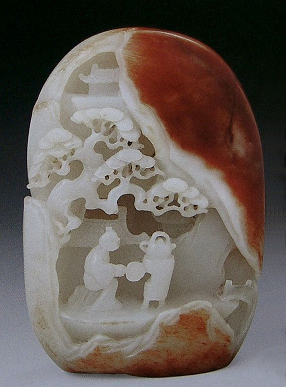图8-1-2 清代 白玉人物纹山子
3.适形创意 ① 适天然玉质之形 在适形构思中，它的思考点是围绕玉料的自然之“形”，即玉料的性质、纹理、瑕疵、形态等因素而展开的艺术构思。 玉料由于它的品种不同，因此有着不同的特征，如质地的紧密和较松，纹理、皮色面积和深度，形态的圆润和俊俏等，这些料形的特质对于设计来说，是一种制约，而对于有创意的雕刻师来说，却把其看作是一个启示，灵感由此而来。设计要适应这些特点，顺其自然，充分显示玉质自身的优美语言和表达形式，使创意融于自然的玉质之中，塑造出天趣盎然的玉器作品，自然的流露，越增其美。因此，对于山子玉器的设计，首要任务是还是“相玉”，即对所要雕凿的玉料进行仔细地察看，反复推敲，细致琢磨，考虑周全，才能下刀，行话说“一相顶九工”就是这个道理。“相玉”的过程最能体现雕刻者的艺术水平，只有全面地深层地了解玉料，设计雕刻才能胸有成竹，得心应手，巧得佳作。 ② 创高山流水之意 山子玉顾名思义是以山水为主的题材，因此，在观察玉料的同时，它的色泽、裂痕、形状都成为启示、诱发、勾画山水的基本语言，也许是远山，也许是幽谷；似乎是红叶秋山,似乎又是晚霞牧归，这时双眼似乎能够透过玉石，寻找组合山水的元素，同时脑海也呈现出一幅幅不同的画意，以最佳的视角、最佳的意境赋予玉料之中。 ③ 意形天合自然美 山子玉器它的图案创意和造型款式，它的图形意境和玉料形质，要自然、贴切、合理的结合，呈现出天作之合的艺术效果。因此，山子玉的琢磨不仅有高超的技巧，更要有不凡的智慧，深刻领悟材料、人意和技巧的内在联系，使它们巧妙运用，融会贯通，天工雕饰（图8-1-3、图3-1-4）。 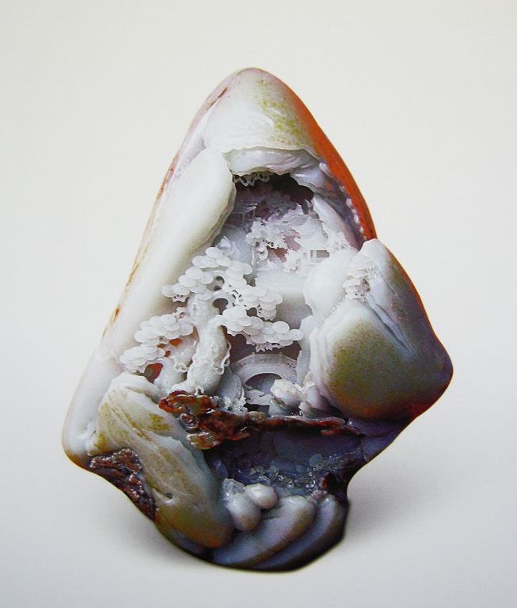图8-1-3 和田籽玉 枫桥夜泊 正面（神工奖金奖）薛春梅设计制作
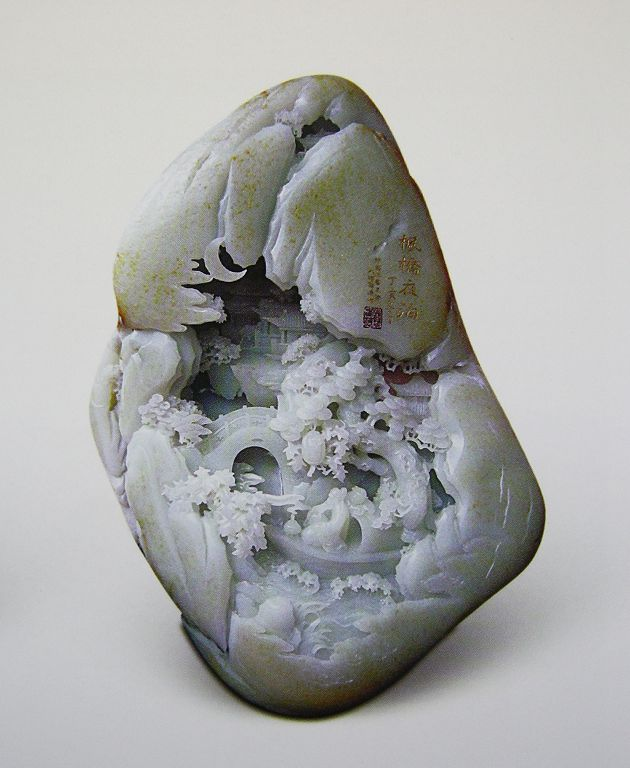图8-1-4 和田籽玉 枫桥夜泊 背面
二、多种的雕琢 在山子玉的雕琢中为了表现一定的意境，在雕刻形式上采用了多中的雕刻形式，其中有圆雕、浮雕、透雕、线刻、薄意，充分表现出不同的雕刻技法。 山子玉本身就是一个具有三维空间的立体圆雕，可以从多个方向去观赏它的造型美感，随着视点的移动，山子的形体展现出不同的画面。然而，总有一个面是最佳观赏角度，即正面。 浮雕在一般的雕刻中观赏面只有正面，而山子玉雕中它的观赏面不仅仅有主要的一面，有时是随着视点的移动而使浮雕产生转折、起伏，又引向背面，观赏极富意味。 透雕在山子玉的雕琢中不仅使形象清晰，具有玲珑剔透的效果，同时，显示出作者高超的琢玉技巧。 在山子玉的雕刻中，线刻的运用也是极为重要的，线刻根据不同形象的要求，合适施刀，如人物的发鬓，、胡须，服装的纹饰，以及鸟类的毛羽，花草的叶茎，山势的纹脉，流水的波纹等等。同样是线刻，线形却是千变万化，因此运砣线迹讲究速度快慢、长短粗细、刚健柔美，或细细密布，或洋洋洒洒，各显韵味，给山子玉器起着提神和点缀作用。 薄意，在山子玉中体现出细腻的砣韵和刀味，又富有诗情画意。 山子玉器中的各种雕法不能截然区别，有时圆雕中有浮雕的形式，浮雕中也有近似圆雕的表现。山子玉器琢磨往往把圆雕、浮雕、透雕、线刻、薄意融和在一起，成为独特的工艺形式（图8-2-1至图8-2-4）。 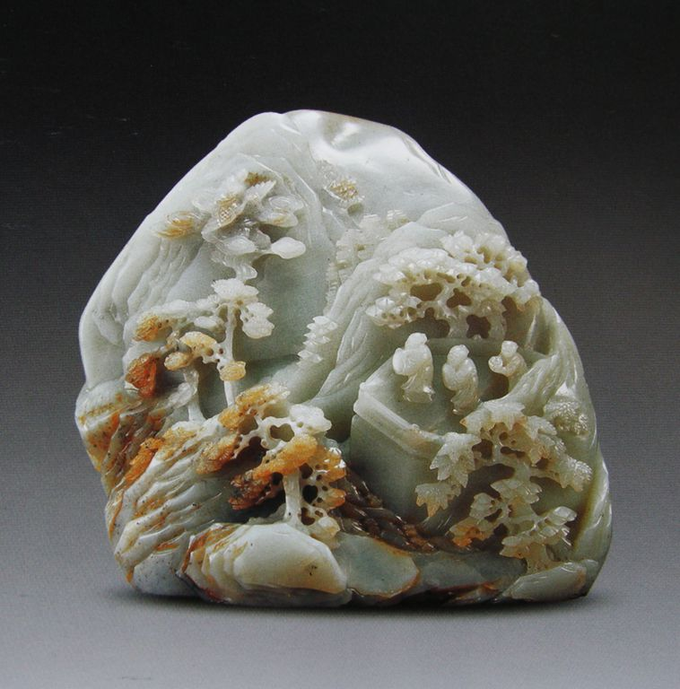图8-2-1 清乾隆 青白玉留皮福禄寿山子摆件
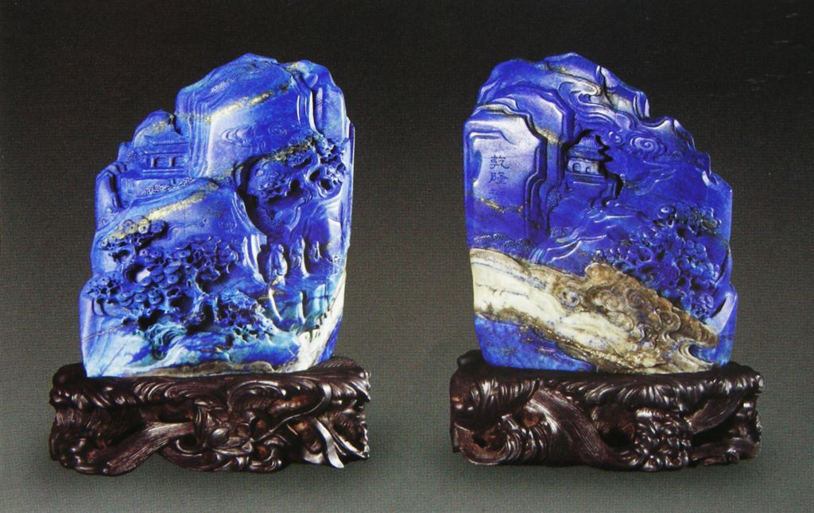图8-2-2 清乾隆 青金石山水人物山子
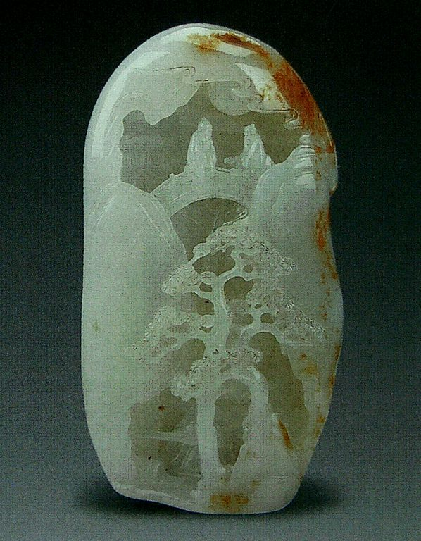图8-2-3 清乾隆 白玉抚琴图山子
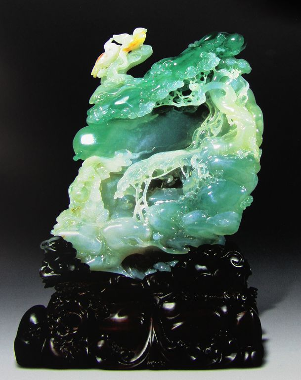图8-2-4 翡翠 乐山（天工奖铜奖）作者：翁伟民
三、观赏的韵味 在山子玉不大的空间之中，我们可见博大的山河之气，在此运用了艺术的对比手法来达到以小见大的艺术效果。对比法仍在艺术辩证法的范畴之中，如：动与静、张与弛、虚与实、藏与露、疏与密、曲与直、自然与雕琢等等，这些形成对立和反差，而最后去求得和谐、统一。这就是艺术的辩证法，这其实也是中国古老的阴阳对立规律在山子玉雕琢中的一大体现。 1.大小之美 在山仔玉雕中何为大，何为小，那只有再对比之中才有鉴别，大面积的山体外形保留着自然的玉质或皮质，大美不言，无需雕琢，有素面朝天的自然美；亭宇为小、人物为小、草木为小，通过细写深描，精雕细琢，展现出鬼斧神工的雕琢美，在小巧、细腻、精致的衬托下、对比下，更见玉山子的浑然博大，这正是山子玉艺术造型的特点。 2.远近之境 山子玉有丰富的层次感，在构图上有中国山水画的“平远”、“高远”、“深远”的画理，在层层叠叠的雕刻中使我们的视点游览于远近的高山流水、亭宇楼阁、云绕松柏、曲径通幽的景致之中，近景砣工浑然雕饰，中景雕琢精美绝伦，远景刻画细腻曼妙，在我们欣赏雕工的同时，似乎已回归自然，享受自然，在远近之境中，自然而然地将宇宙和心灵融为一体，顿悟有超凡脱俗之感，山子玉的魅力就在于将你引入到情景交融的意境之中。 3.动静之韵 山子玉的设计有许多将动静对比的处理融于入构思之中，如山静水动、树静鸟动、建筑静人物动等等，用动静对比来勾画一种意境。如（图8-3-1）山子玉丽人行，作者将淡黄色的玉料作横向的山体构图，既有宁静之感，又为“行” 作了意境的铺垫。从中的细心琢磨，层层刻画，作了绝妙的动静安排：山体的静，楼宇的静，仕女徐行，马蒂声声，摇曳的杨柳，飘动的流云，勾画出一片春意，使观者的思绪随着动静之韵去体悟自然，去回味玉意。 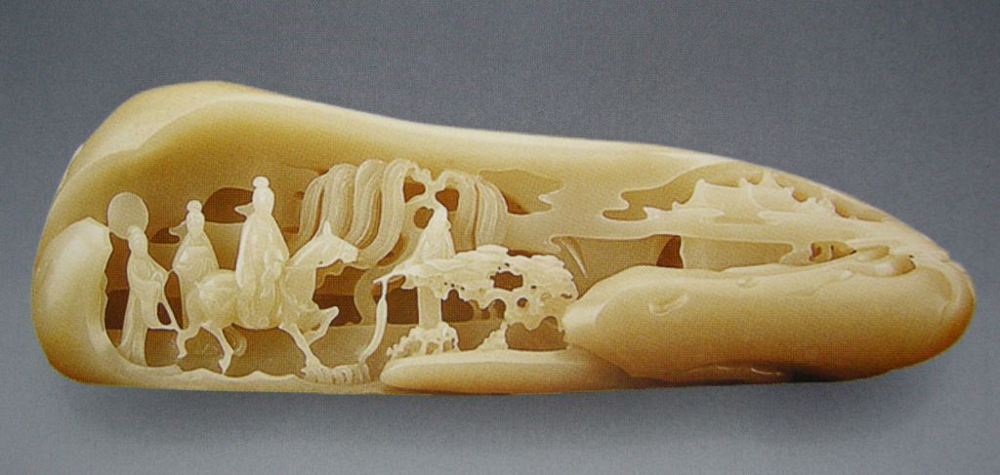图8-3-1 黄玉 丽人行 作者：孟庆东
4.诗情画意 诗，凝练而优美，意境深远，回味无穷。治玉同样如此，追求“画中有诗，诗中有画”的境界。尤其作为山子玉，大部分保留着天然的原形，存有一种神秘、朦胧之美，往往会引作者起无限的遐思，治玉者加以巧妙的构思和优美的描绘则更容易使山子玉富有诗情画意。 图8-3-2流水人家，山子玉的造型完全是原始的籽玉形态，仿佛大自然有意的在羊脂玉上泼洒着层层墨韵，在黑白之间，裂变之间，构画成黑瓦、白墙，晕染出暮色、月影。拉近的有苍劲柳树，推远的有羞涩芭蕉，炊烟、流云纵升横流，潺潺的流水由平远至深远，在对比的矛盾之中交织成一幅和谐的诗情画意的水墨乡情画面。 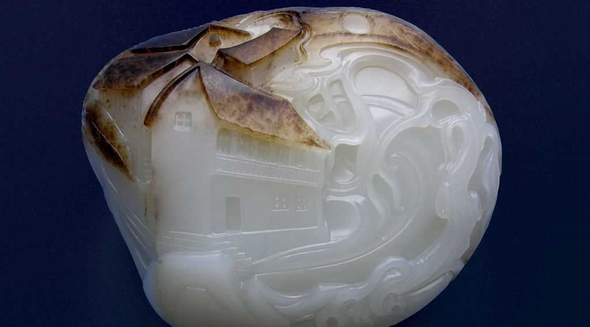图8-3-2 和田籽玉 流水人家（正面） 赵丕成设计制作
然而我们再看它的反面，景致一下拉得很近，展现的是水乡一角， “屋漏痕”沁入砖墙之间，似见水珠滴滴下坠，河面泛起层层涟漪，在这一宁静的幽景之中我们似乎能听到水的滴答之声，顿悟：简朴、清净、淡然之美，不乏有诗意的境界，有不可言传的意境美。因此，琢玉要经营，意韵更美妙（图8-3-3）。 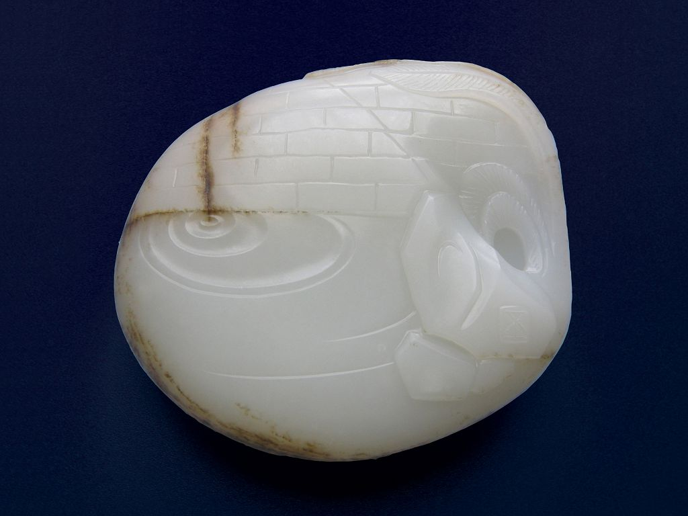图8-3-3 和田籽玉 流水人家（背面）
山子玉的设计和立意中要充分发挥玉的自然美、意蕴美，以及雕琢的形式美的技巧美，使山子玉的创意和雕琢自然地进入玉质的画意之中，（图8-3-4玉料）料体不大，但在形态和色彩之间感到了自然天地的美妙，似乎看到了一条五彩祥云的神奇天路，又似乎看到了花雨飘洒的丝绸古道，在小小的玉料之中想象是漫无边际的，丰富多彩的，在砣轮渐渐的探索下，琢磨出舞动的飞天，古拙的石窟，金色的沙漠，飘绕的流云，形成了敦煌逸影的山子玉作（图8-3-5）。 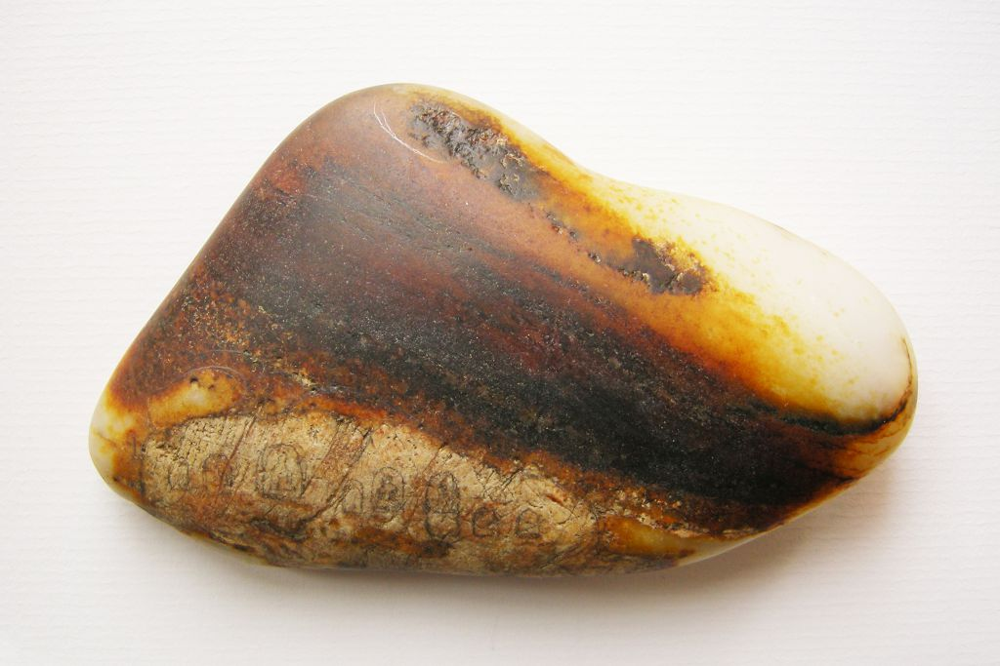图8-3-4和田籽玉 敦煌逸影原料
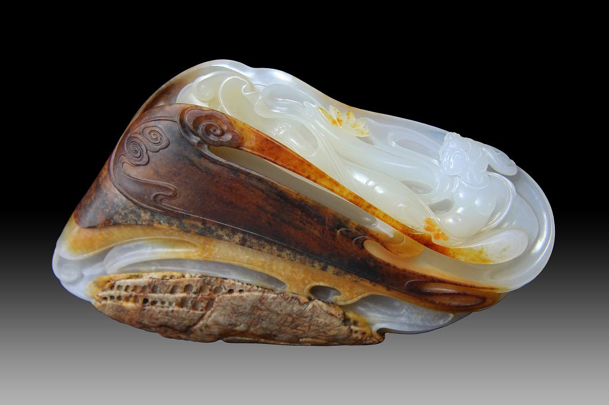图8-3-5 和田籽玉 敦煌逸影（正面） 赵丕成设计制作
然而它的背面大面积的保留着籽玉撒金皮的皮质，犹如升腾的金色佛光，化作一片祥云，又映衬着一朵洁白的玉莲，在简洁的形式中给观者一个宁静和想象的空间……（图8-3-6） 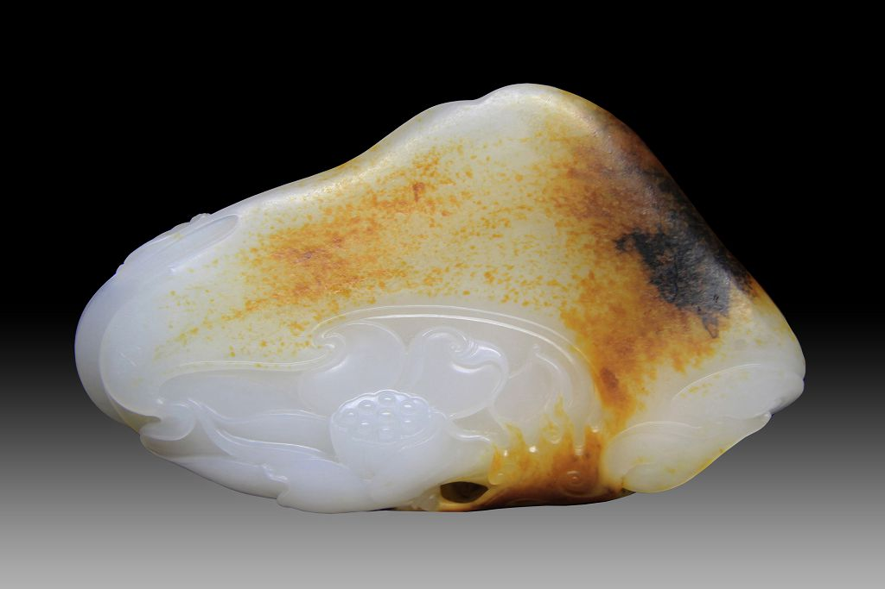图8-3-6 和田籽玉 敦煌逸影（背面）
在典型的山子玉中往往借自然的玉料造型化作成山岳的造型，再雕饰于流水、亭宇、花木、鸟兽、人物等，借自然之物抒发心情，把“玉意”转化成立体的画意，凝固的诗情，使赏者见之心灵波动，玩之可思可感，思之回味无穷（图8-3-7、图8-3-8）。 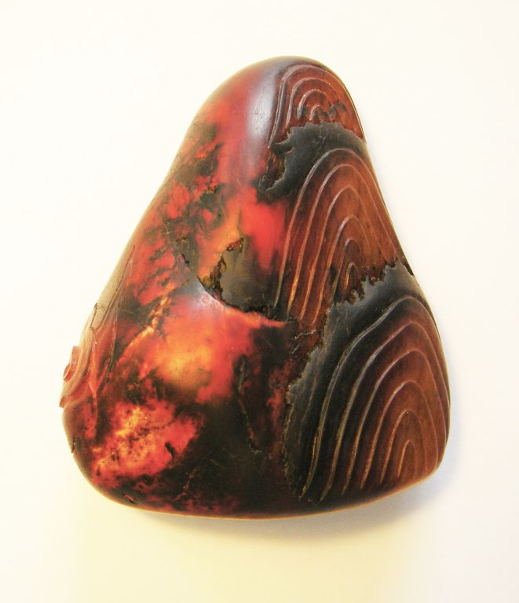图8-3-7 红玉 火焰山 张敏设计制作
图8-3-8 独山玉 春雨润泽 作者：董学清
小贴士8：玉之自然美 一件好的玉器我们会用“天工妙造”来形容，这里的“天工”不仅是指精妙的雕琢技巧，而是指依照、顺从玉的自然规律进行雕琢，在造型中充分表现出玉质的自然属性和本质美感，至于造型和线条的美感，要有自然的气韵，娴熟的雕琢技巧要自然的流露，一切多要自然的体现，使我们的视感和触感，有着一种流畅、舒适、贴切的感觉，绝无矫揉造作之态。 课外练习与思考： 1.说说不同的雕琢技法在山子玉器中的合理运用。 2.试一试将美的形式规律运用到其它玉器的设计之中去。
第九章 琢玉之风随时代——大师名家玉作掠影 历代玉器记刻着时代的变迁。然而，现代玉器同样以她特有的形式美感透射出时代的气息，我们通过欣赏大师、名家优秀的玉器作品，去感受当今玉器特有的温润美，技巧美和创意美。 学习目标： 1. 学习大师、名家精妙的琢玉技巧 2. 感受优秀玉器作品的艺术经营和个性创造意 3. 领悟大师、名家玉器的形式美感和温润玉意 教学要求：通过本章的学习，使学员能理解优秀的玉器作品不仅需要高超的琢玉技艺，更需要独创的艺术构思，个性的琢玉手法，自然的表现玉意。 一、现代玉器的丰厚底蕴 现代玉器从1949年新中国建立以后，发展至今已有半个多世纪，其间也有潮起潮落。而今，随着经济的繁荣发展，人们的精神文化需求高涨，赏玉、藏玉者日益增多，好玉之风日益盛行，为玉器的琢磨、发展提供了一个良好的经济基础和文化氛围。 在20世纪50年代至70年代末，老一辈琢玉艺术家为中国玉器事业的复兴和发展做出了卓越的贡献，在机器设备上，不断改进；在玉器品种上，俱全门类；在用料设计上，完善了传统的用料设计法则，并树立精心创造的创作思想，同时留下了许多优秀的玉器作品，为现代玉雕的发展淀结了丰厚的底蕴（图9-1至图9-10）。 图9-1珊瑚 六臂佛锁蛟龙 潘秉衡（20世纪50年代末 北京市工艺美术研究所）设计制作
图9-2玛瑙雏鸡 潘淑艾（20世纪60年代 北京市玉器厂）设计制作
图9-3珊瑚 鼓上飞燕 李博生（20世纪70年代 北京市玉器厂）设计制作
图9-4玛瑙虾盘 王仲元、杜瑞静（20世纪70年代北京市玉器厂）设计制作
图9-5玛瑙 俏色五鹅 （1974年 北京市玉器厂）设计：王树森 制作：黄宝瑞
图9-6 珊瑚 梅花插瓶 设计：关盛春 制作：黄德荣
图9-7 紫花翡翠 万紫千红链条瓶 上海玉雕厂设计制作
图9-8 翡翠 飞熊杯 设计：刘纪松 制作：冯根龙 李荣伟
图9-9 岫岩玉 嫦娥舒广袖 设计：肖海春 王恒书 制作：王恒书 韦恩福
图9-10 岫岩玉 南海明珠 设计：朱宁芳 黄 忄隽 肖海春 制作：黄 忄隽
二、现代玉器的个性风采 在好玉之风盛行的今天，孕育着一大批大师、名家和琢玉高手，他们在与玉的交流过程中渐渐对玉产生了感悟，琢玉有了新气息、新思路、新款式，并将传统的玉文化融入现代的生活，又将现代的审美意识渗透到琢玉的创意之中，从而将“新玉”去润养现代人的心灵，去延续玉的文脉。 图9-11 白玉 母子情牌，是玉牌中之极品，在大师娴熟精炼的刀法下，雕琢出一片母子情深，刻画出一幅优雅景致，玉牌构图疏密有致，从前景的人物、葡萄架渐渐延伸到远景的长廊和亭台，这全在方寸之间和极薄的浮雕之中表现立体的空间感、层次感，充分展现出大师精妙的琢玉技巧和中西合璧的绘画功底。 图9-11 白玉 母子情牌（天工奖金奖）作者：刘忠荣
图9-12 白玉 普陀洛迦观音，作品构图饱满，动静相宜。在依势造型中原石构成了普陀洛迦山，山似佛，佛似山，潮起潮落的海水拍打着山体，轻抚着佛衣。而精妙之处在于观音和山体融为一体，又从山间显出，分和得体。观音的造像小步徐行，侧身回眸，以略微扭动身躯和略斜头部，构成了优美的曲线，静态中有微动之势，犹如飘逸升騰的青烟，既含蓄端庄，又灵动优雅。从她眼睛微闭，静观自在，慈祥的微笑中还带有一丝神秘之感。尤其在衣纹的处理上既有“曹衣出水”之风又有“吴带当风”之韵，充分体现了大师深厚的艺术底蕴和琢玉水平。 图9-12 白玉 普陀洛迦观音（天工奖金奖）作者：于泾
图9-12 白玉 普陀洛迦观音（天工奖金奖）作者：于泾 图9-13 白玉 玉骨含香，在玉牌中出现了弧面、流线，不仅使玉牌形制有了张力，并且又增添了一份秀美和温润，充分表现出玉质的美感；玉牌和书画的融合，使玉器雕琢有了书卷之气和诗情画意。大师以刀代笔，勾画出飘逸流畅的水仙，苍劲挺秀的梅花，一股清香之气融化在冰肌玉骨之中；在玉牌的反面琢有劲道、饱满而自然的阴刻诗文，可见刀迹的游动和书法随之而出。小小玉牌不仅显示出着大师自然、娴熟、精妙的琢磨技巧，而且蕴含着深厚的书法功力和艺术底蕴。 图9-13 白玉 玉骨含香（天工奖金奖）作者：易少勇
图9-14 白玉 松竹梅宜子孙玉牌 作者：易少勇
图9-15 和田墨玉 清河露玉，作品在大师的手笔下我们似乎看到了一条喀拉喀什墨玉河。墨玉已回归到最本源的状态，在皎洁的月光下，潺潺的流水，斑驳的卵石，空间由远而近，玉女倩影简洁而丰满，作品使我们的视感和思绪完全进入了大自然的美好意境之中。独具匠心的雕琢使墨玉变得如此质朴而绚烂。 图9-15 和田墨玉 清河露玉 作者：吴德昇
现代琢玉不仅仅是表现一种手艺，更是渗透着民族的文化，洋溢着大师、名家各自的风采，从中蕴含着作者对玉的理解，以及琢玉的心境和意趣（图9-16至图9-30）。 图9-16 和田籽玉 金莲 作者：吴德昇
图9-17 白玉 倩影（天工奖金奖）作者：翟念伟
图9-18 白玉 云霞异彩（天工奖铜奖） 作者：翟念伟
图9-19 珊瑚 丝路花雨（神工奖最佳创意奖） 宋丗义设计制作
图9-20 水晶 极乐图 （“天工杯”金奖）作者：仵应汶
图9-21 翡翠 菩提佛祖（天工奖金奖）作者：颜桂明
图9-22 白玉 戏鹦图 作者：孟庆东
图9-23 白玉 杨贵妃（天工奖金奖）作者：王平
图9-24 绿牡丹系列 玉手镯、玉挂件、玉戒指 作者：杨曦
图9-25 白玉 龙腾盛世（神工奖铜奖）雅园设计制作
图9-26 白玉巧雕 路路得利 作者：洪新华
图9-27 白玉 有凤来仪（神工奖最佳工艺奖）卢开飞设计制作
图9-28 加拿大碧玉 枭龙 作者：张森才
 图9-29 白玉 三足炉 （天工奖金奖）作者：马庆华 图9-29 白玉 三足炉 （天工奖金奖）作者：马庆华图9-30 白玉 三足炉（天工奖优秀作品奖）作者：王金高
图9-31 碧玉 发发如意卣，这是一件冠冕堂皇、别具新意的玉石雕刻稀世珍品。细数卣体上的玉环竟有88个之多， 88，发发也。发展！发达！发财！此珍品寄托着人生美好的愿望，遍布卣体的如意纹则象征着自由驾驭人生的心念，实现生命完全自由解放的理想。当打开卣体天冠时，你会惊奇的发现卣盖内竟然还有一个玉环，88添1，“天意”化作“天久”，发之久远也！ 这件玉作不仅在制作技艺上令人叹为观止，而且在设计创意上独具匠心，巧妙经营，因此，我们看大师、名家的作品，不仅要看他们高超的琢玉技巧和完美的造型，而且更要看他们各自独创的琢玉风格，其中包括题材、造型、技巧等方面的创新。让我们细细品味大师、名家精彩的玉器新作，这将对我们以后的玉器设计和制作有着有益的启示。 图9-31 碧玉 发发如意卣 设计：唐培林 制作：韩永年 郭红欣 蒋大年
当我们反复阅读了大师、名家的作品时，有了深切的体会：玉的艺术是心的艺术，我们要用心去领悟玉意，用心去创造新意，用心去表现技艺，在这辛劳而愉悦的琢玉过程中，努力把这一如此美妙的艺术，得以继承、发展和创新。 小贴士9：玉之创意美 成功的玉器作品永远是不落于俗套，独辟蹊径，出奇不意的。一件爱不释手、百看不厌的玉器，除了有良好的玉质、精湛的工艺外，还一定包含着匠心独运的创意构思。 玉器设计一般来说是不可重复的，从观赏者的心理来说，有一个新的题材，新的款式，新的面貌，来打动人们猎奇的审美心理，同时，她又以新的表现语言记刻着时代的印记。创意永远是我们玉器设计追求的方向，创意使我们的玉文化永久地流传。
后 记 在这一年多里我阅览于古代玉器和现代玉器的书籍之中，我传授于玉器工艺的教学之中，我琢磨于“敦煌逸影”的玉器制作之中。今天，《玉器工艺》书稿终于完成，教学亦有良好的效果，我的玉作也即将完工。这三个过程从教材编写来说是一个整体，在古代和现代玉器的书籍中使我深深感到玉文化的博大精深，从中玉器的资料和玉器美学的理论为我笔耕《玉器工艺》教材有了底气；在玉器工艺教学中，学员那执着、稚嫩的雕琢有了新的气息，闪烁着创意的灵光，给我以教学的动力；自我的玉器设计和制作是琢玉经验的积累，每当一件件玉器琢磨而成，心底的愉悦油然而生，不免也有一些体会，因此，记下了不少的杂记和玉器画稿，这些都是《玉器工艺》书稿的支撑材料。 本书编写的过程又是一个很好的学习过程，我阅览了有关玉器书籍20余本，在此向这些作者深表敬意和感谢!我运用了300多张精彩的玉器佳作图片，在此向玉器行业的前辈、大师、名家、同仁、好友深表谢意！接着要感谢黄保余老师提供了有关玉器资料和图稿，另外特别要感谢我的同学唐培林为本教材提供了珍贵图片和资料，还要感谢我院对此书编写有过帮助的老师。 本书中对历代玉器的认识、对玉质温润之美的理解、对玉器的设计和制作谈了自己的体会，皆属一管之见，但愿不至于贻笑大方。由于本人学识肤浅，书中肯定还存在着不足之处甚至些许谬误，还望行业专家、前辈和广大读者指正。 赵丕成 2010-8-20
参考文献 1.中国玉器全集编辑委员会编.中国美术分类全集.中国玉器全集. 石家庄: 河北美术出版社.1993年 2.邱东联编著.中国翡翠钻石目录.海口：南方出版社.2000年 3.中国文物信息咨询中心编著.中国古代玉器艺术.北京：人民美术出版社.2003年 4.方泽编著.中国玉器. 天津: 百花文艺出版社.2003年 5.杨伯达主编.中国玉器全集. 石家庄：河北美术出版社.2005年 6.薛贵笙主编.中国玉器鉴赏. 上海:上海科学技术出版社.香港: 中华书局（香港）有限公司.2005年 7.史树青总主编.收藏家杂志社编.中国艺术品收藏鉴赏百科全书.玉器卷.北京：北京出版社出版集团.北京出版社.2005年 8.周南泉主编.李彦君编著.中国玉器投资与鉴藏. 郑州:大象出版社.2005年 9．欣弘主编.百姓收藏图鉴.中国历代玉器. 长沙: 湖南美术出版社.2006年 10.刘云辉编著.陕西出土东周玉器.北京：文物出版社.台北：众志美术出版社.2006年 11.赵丕成著.切磋琢磨—玉器.上海：上海科技教育出版社.2007年 12.奥岩主编.2006中国玉雕.石雕“天工奖”典藏集. 北京：地质出版社.2007年 13.张尉著.古玉鉴要.杭州：浙江摄影出版社.2007年 14.皮楚荣作.观玉见喜—上海玉展纪念专辑.台北市：圣典企业社.2007年 15.杨培钧 陈长土著.古玉拾珍.杭州：浙江古籍出版社.2008年 16.俞伟理编著.中国玉雕—苏州名家名品.上海：上海三联书社.2008年 17.孙敏主编.2007中国.上海神工奖玉雕作品精选集.上海：上海科学技术出版社.2008年 18.欣弘编.2009古董拍卖年鉴—玉器.长沙：湖南美术出版社.2009年 19.陆华著 钱振峰主编.海派玉雕大师名家.上海：上海文化出版社.2009年 20.奥岩主编.卓尔大雅：中国玉石雕刻大师吴德昇卷.北京：地质出版社.2009年 21.俞伟理编著.中国玉雕—南阳名家名品.上海：上海三联书店.2009年 22.孙敏主编.2009中国.上海神工奖玉雕作品精选集.上海：上海科学技术出版社.2010年 |